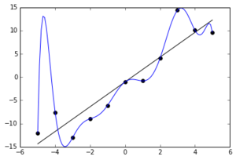
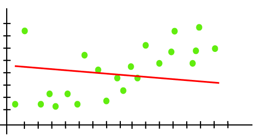

#import required packages
import numpy as np
import pandas as pd
import matplotlib.pyplot as plt
import seaborn as snsOverfitting and Underfitting
Hey! Hope you all are enjoying the tutorials. In this segment we are going to learn about the most common issues that arise during modeling the data and the ways to handle them. Let’s get started!
What is Overfitting?
If you have worked on Machine Learning models you would have come across a case where your models works perfectly on training data but fails on unseen data. This is in Supervised learning, where the idea is to generalize on never seen data.
What can you infer from the image below?

Let us consider a case of a linear regression model. We can see from the image that the model is trying to learn every data point to an extent where it also captures the noise. But when a new point is given as an input, the model wouldn’t be able to capture the data point and generalize it. This is called Overfitting.
In linear regression, the aim is to reduce the total cost i.e. the distance between the line generated(straight line) and the input data points. The problem of overfitting may arise when there are multiple iterations during the training of a large dataset. During the training the model would have learnt the noise and hence fails to generalize. Now think of what data size is a perfect size to train.
What is Underfitting?
A model is said to have underfitting when it can’t learn the underlying trend A statistical model or a machine learning algorithm is said to have underfitting when it cannot capture the underlying trend of the data i.e. neither model the training data nor generalize to new data. Reasons could be lesser number of datapoints to train, high bias and low variance, the model is not complex enough or bad feature engineering. One simple remedy is to use another algorithm.

Examples for Overfitting and Underfitting
Let us now explore the above issues with the help of a dataset. I have chosen a dataset from Kaggle. - House Sales in King County, USA. You may choose any dataset you want to as you will not be escaping either of two problems and will be encountering those :)
Note - I will be performing basic EDA and feature selection for modelling, but remember doing these steps with extra caution would help you mitigate overfitting and Underfitting
#Chosing 1st 1000 rows
df = pd.read_csv("kc_house_data.csv")
df = dfUnderstand attributes
df.info()<class 'pandas.core.frame.DataFrame'>
RangeIndex: 21613 entries, 0 to 21612
Data columns (total 21 columns):
# Column Non-Null Count Dtype
--- ------ -------------- -----
0 id 21613 non-null int64
1 date 21613 non-null object
2 price 21613 non-null float64
3 bedrooms 21613 non-null int64
4 bathrooms 21613 non-null float64
5 sqft_living 21613 non-null int64
6 sqft_lot 21613 non-null int64
7 floors 21613 non-null float64
8 waterfront 21613 non-null int64
9 view 21613 non-null int64
10 condition 21613 non-null int64
11 grade 21613 non-null int64
12 sqft_above 21613 non-null int64
13 sqft_basement 21613 non-null int64
14 yr_built 21613 non-null int64
15 yr_renovated 21613 non-null int64
16 zipcode 21613 non-null int64
17 lat 21613 non-null float64
18 long 21613 non-null float64
19 sqft_living15 21613 non-null int64
20 sqft_lot15 21613 non-null int64
dtypes: float64(5), int64(15), object(1)
memory usage: 3.5+ MBSet target variable
target = df['price']
df.drop(['id', 'date', 'price'], axis=1, inplace=True)
df| bedrooms | bathrooms | sqft_living | sqft_lot | floors | waterfront | view | condition | grade | sqft_above | sqft_basement | yr_built | yr_renovated | zipcode | lat | long | sqft_living15 | sqft_lot15 | |
|---|---|---|---|---|---|---|---|---|---|---|---|---|---|---|---|---|---|---|
| 0 | 3 | 1.00 | 1180 | 5650 | 1.0 | 0 | 0 | 3 | 7 | 1180 | 0 | 1955 | 0 | 98178 | 47.5112 | -122.257 | 1340 | 5650 |
| 1 | 3 | 2.25 | 2570 | 7242 | 2.0 | 0 | 0 | 3 | 7 | 2170 | 400 | 1951 | 1991 | 98125 | 47.7210 | -122.319 | 1690 | 7639 |
| 2 | 2 | 1.00 | 770 | 10000 | 1.0 | 0 | 0 | 3 | 6 | 770 | 0 | 1933 | 0 | 98028 | 47.7379 | -122.233 | 2720 | 8062 |
| 3 | 4 | 3.00 | 1960 | 5000 | 1.0 | 0 | 0 | 5 | 7 | 1050 | 910 | 1965 | 0 | 98136 | 47.5208 | -122.393 | 1360 | 5000 |
| 4 | 3 | 2.00 | 1680 | 8080 | 1.0 | 0 | 0 | 3 | 8 | 1680 | 0 | 1987 | 0 | 98074 | 47.6168 | -122.045 | 1800 | 7503 |
| ... | ... | ... | ... | ... | ... | ... | ... | ... | ... | ... | ... | ... | ... | ... | ... | ... | ... | ... |
| 21608 | 3 | 2.50 | 1530 | 1131 | 3.0 | 0 | 0 | 3 | 8 | 1530 | 0 | 2009 | 0 | 98103 | 47.6993 | -122.346 | 1530 | 1509 |
| 21609 | 4 | 2.50 | 2310 | 5813 | 2.0 | 0 | 0 | 3 | 8 | 2310 | 0 | 2014 | 0 | 98146 | 47.5107 | -122.362 | 1830 | 7200 |
| 21610 | 2 | 0.75 | 1020 | 1350 | 2.0 | 0 | 0 | 3 | 7 | 1020 | 0 | 2009 | 0 | 98144 | 47.5944 | -122.299 | 1020 | 2007 |
| 21611 | 3 | 2.50 | 1600 | 2388 | 2.0 | 0 | 0 | 3 | 8 | 1600 | 0 | 2004 | 0 | 98027 | 47.5345 | -122.069 | 1410 | 1287 |
| 21612 | 2 | 0.75 | 1020 | 1076 | 2.0 | 0 | 0 | 3 | 7 | 1020 | 0 | 2008 | 0 | 98144 | 47.5941 | -122.299 | 1020 | 1357 |
21613 rows × 18 columns
Check correlation between variables and drop correlated variables
corrmat = df.corr()
f, ax = plt.subplots(figsize=(12, 9))
sns.heatmap(corrmat, vmax=.8, square=True);
df.drop(['yr_built', 'yr_renovated', 'zipcode', 'lat', 'long', 'sqft_living15', 'sqft_lot15'], axis=1, inplace=True)
df| bedrooms | bathrooms | sqft_living | sqft_lot | floors | waterfront | view | condition | grade | sqft_above | sqft_basement | |
|---|---|---|---|---|---|---|---|---|---|---|---|
| 0 | 3 | 1.00 | 1180 | 5650 | 1.0 | 0 | 0 | 3 | 7 | 1180 | 0 |
| 1 | 3 | 2.25 | 2570 | 7242 | 2.0 | 0 | 0 | 3 | 7 | 2170 | 400 |
| 2 | 2 | 1.00 | 770 | 10000 | 1.0 | 0 | 0 | 3 | 6 | 770 | 0 |
| 3 | 4 | 3.00 | 1960 | 5000 | 1.0 | 0 | 0 | 5 | 7 | 1050 | 910 |
| 4 | 3 | 2.00 | 1680 | 8080 | 1.0 | 0 | 0 | 3 | 8 | 1680 | 0 |
| ... | ... | ... | ... | ... | ... | ... | ... | ... | ... | ... | ... |
| 21608 | 3 | 2.50 | 1530 | 1131 | 3.0 | 0 | 0 | 3 | 8 | 1530 | 0 |
| 21609 | 4 | 2.50 | 2310 | 5813 | 2.0 | 0 | 0 | 3 | 8 | 2310 | 0 |
| 21610 | 2 | 0.75 | 1020 | 1350 | 2.0 | 0 | 0 | 3 | 7 | 1020 | 0 |
| 21611 | 3 | 2.50 | 1600 | 2388 | 2.0 | 0 | 0 | 3 | 8 | 1600 | 0 |
| 21612 | 2 | 0.75 | 1020 | 1076 | 2.0 | 0 | 0 | 3 | 7 | 1020 | 0 |
21613 rows × 11 columns
Standardize variables
y = target
X = df
#X = (X - np.average(X)) / (np.std(X))Train test Splits
from sklearn.model_selection import train_test_split
X_train, X_val, y_train, y_val = train_test_split(X, y, test_size=0.20, random_state=1)
X_train.shape, X_val.shape, y_train.shape,y_val.shape((17290, 11), (4323, 11), (17290,), (4323,))Let’s model the data with Linear Regression
from sklearn.linear_model import LinearRegression
# create linear regression object
reg = LinearRegression()
# train the model using the training sets
reg.fit(X_train, y_train)LinearRegression()In a Jupyter environment, please rerun this cell to show the HTML representation or trust the notebook.
On GitHub, the HTML representation is unable to render, please try loading this page with nbviewer.org.
LinearRegression()
Test Accuracy(R2)
r2_score = reg.score(X_val,y_val)
print(r2_score*100,'%')60.9335613929291 %Train Accuracy(R2)
r2_score = reg.score(X_train,y_train)
print(r2_score*100,'%')60.333380604052465 %Inference - We can observe that the Train Accuracy and Test Accuracy are almost same. The model is clearly not overfitting. But is it underfitting? Yes! Do you think I should be changing the dataset size and remodel with different sizes? Yes, I did try that, but the maximum accuracy I got was 65% for the dataset size 3000. Yet, this isn’t a good model either. Nobody would want to use a model that can neither learn the data nor predict rightly. So let’s now find a way out for this. Let’s try a different algorithm
Let’s try ExtraTreesRegressor
To learn more about the algorithm visit - https://machinelearningmastery.com/extra-trees-ensemble-with-python/
The training takes too long, hence using first 1000 rows
from sklearn.ensemble import ExtraTreesRegressor
model = ExtraTreesRegressor().fit(X_train, y_train)Test Accuracy
y_pred = model.predict(X_val)
print(model.score(X_val, y_val))0.688413379207439Train Accuracy
X_pred = (model.predict(X_train))
print(model.score(X_train, y_train))0.9992315270234264Inference - We can clearly see that the train accuracy is way too high than the test accuracy. This is called Overfitting. The model is able to do a great job on training data but has poor performance on the testing data. In the next tutorial we will be seeing on ways to mitigate overfitting and k-fold cross validation for parameter tuning, model selection and feature selection. We will be revisiting this dataset and try a different approach. Cheers!
Credit: This tutorial is prepared by Ajay Sadananda
![Created in deepnote.com]() Created in
Created in